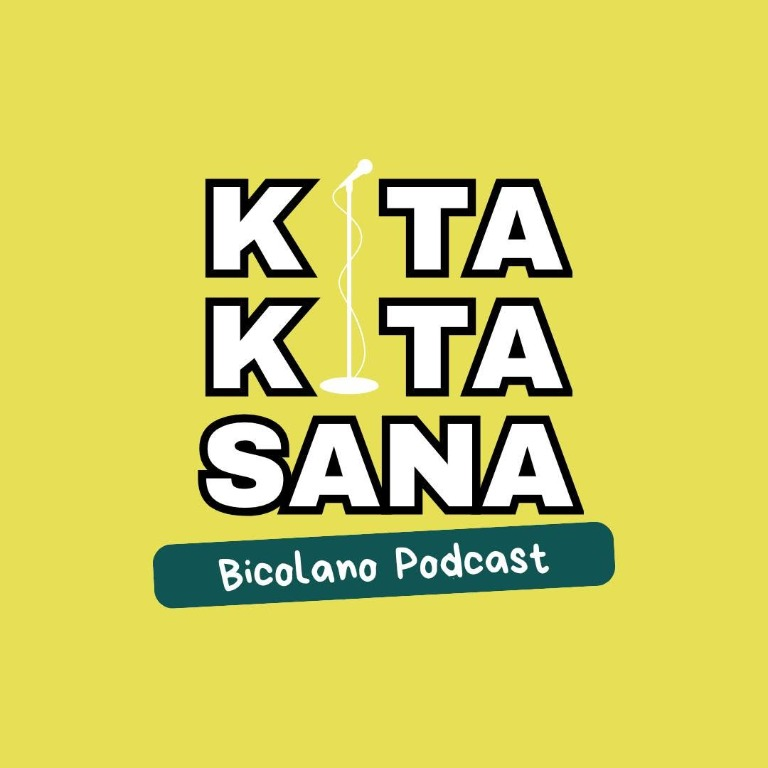

Episode 45: The Future of Bicol Football
With PH-Bicol U16 Football Club
Episode 45: The Future of Bicol Football
With PH-Bicol U16 Football Club
Iristoryahang Bicolano para sa mga Bicolano
Kita-kits, Bicol!
Stories, conversations, and Bicolano perspectives from Naga City. Pull up a chair and join the conversation.
- Stories from Naga City
- Made for Bicol and beyond
- Join us on Facebook
Latest uploads from the Kita Kita Sana YouTube channel.
From Naga City, Bicol
Istoryahang Bicolano para sa mga Bicolano.
Kita Kita Sana is a Bicolano video podcast based in Naga City. Each episode makes room for stories and conversations rooted in Bicolano life.
Episode archive
Keep the conversation going.
New uploads appear in the featured player above automatically. Browse the complete, up-to-date episode archive on the official YouTube channel.
Browse all episodes on YouTubeLive updates
Fresh content from every platform.
Watch the latest episode, listen on Spotify, or visit the Facebook page for community posts.
Episode 45: The Future of Bicol Football
With PH-Bicol U16 Football Club
 Episode 45: The Future of Bicol Football
With PH-Bicol U16 Football Club
Episode 45: The Future of Bicol Football
With PH-Bicol U16 Football Club

Kita Kita Sana | Naga City Iristoryahang Bicolano para sa mga Bicolano. Follow us for community updates.Community vibes
Connect with the show beyond the mic.
Have a story, a guest idea, or a topic you want to hear? Join the conversation with Kita Kita Sana on Facebook.
- Find the show on YouTube and Spotify
- Suggest a guest or conversation topic
- Share your own Bicolano story
“Istoryahang Bicolano para sa mga Bicolano.”
Send your ideas and stories to the show through its Facebook page.
Share your idea on Facebook